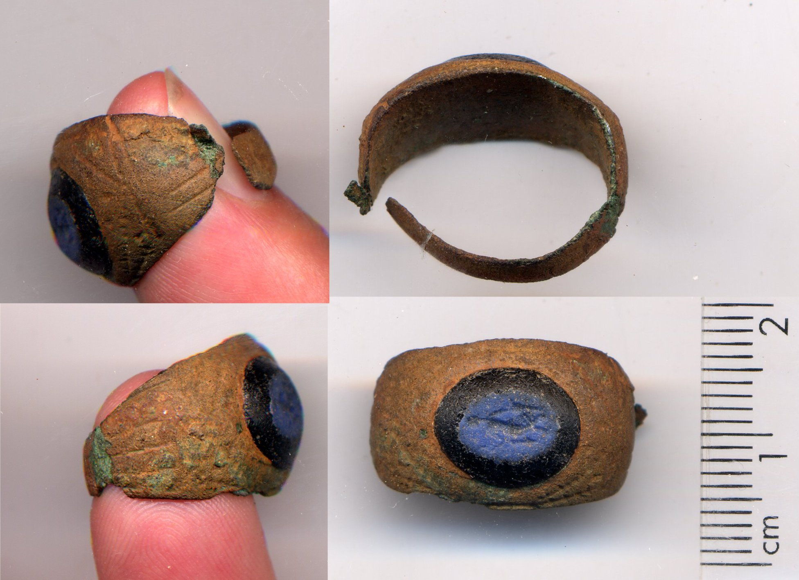
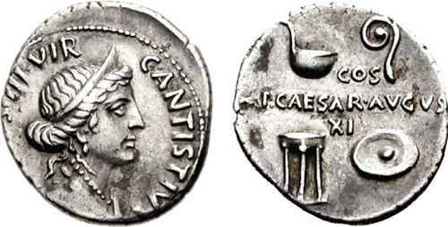
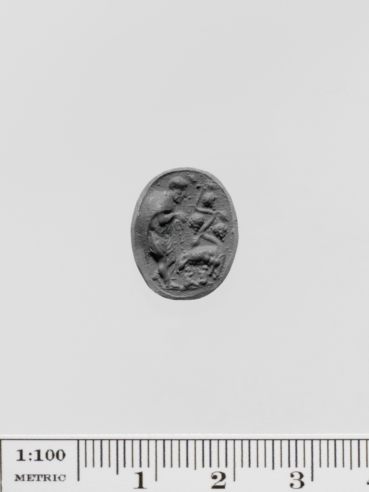
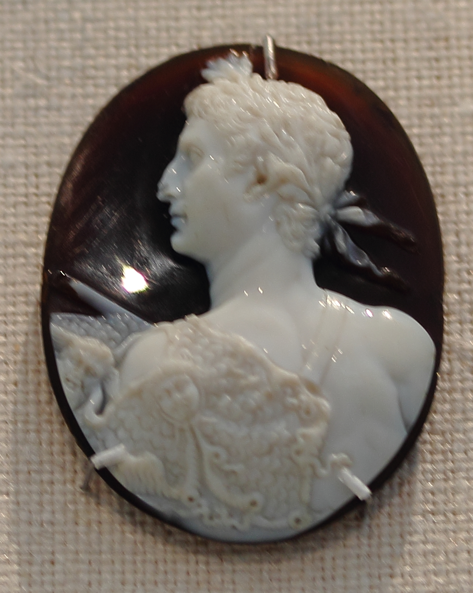
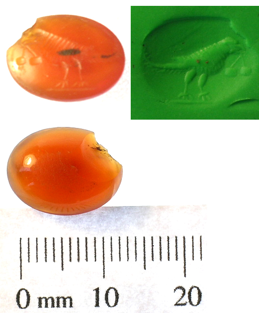
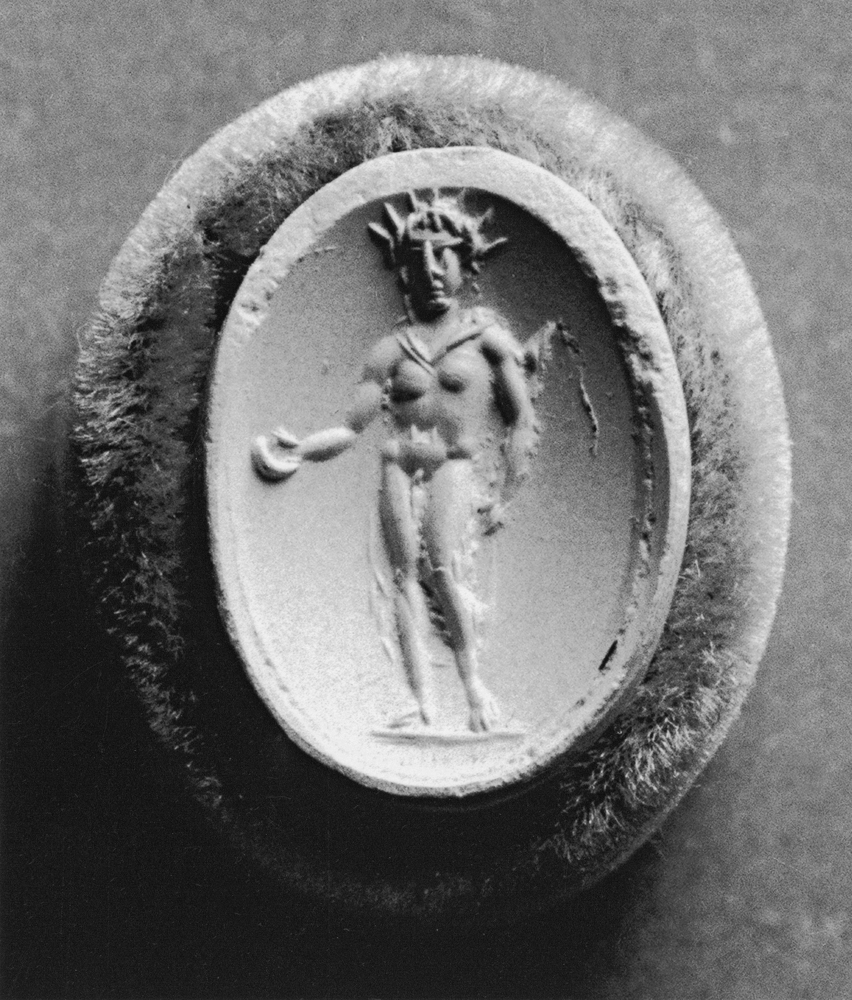
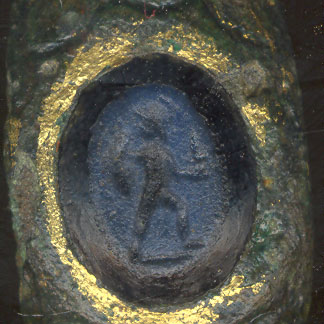

Issued
Coins and monuments broadcast imperial messages.
Gallery 01
Imperial images did not just move downward from Augustus. They lasted because people bought them, wore them, and made them personal.

Coins show what the state could issue. Gems and rings show what people chose to carry. That choice turned propaganda into everyday culture.
Coins and monuments broadcast imperial messages.
Glass gems made similar imagery easier to own.
Rings made public symbols part of private identity.
Object Study

Coin • 16 BC
A coin is the clearest top-down object here. Venus connects Augustus to divine ancestry, but the user did not choose that image; the state placed it in circulation.

Gem • Roman Imperial
Glass paste changes the question from control to access. This was not issued like currency. Someone selected it, which means political imagery entered private life by choice.
Ring • 2nd-3rd century AD
A ring turns image into self-presentation. The wearer carried a public visual language on the body, helping imperial symbols spread from below.
Reading Path
Augustus could repeat official messages through texts, coins, and monuments.
Cheap gems mattered because they were purchased, not issued.
On a ring, the same symbol could become taste, loyalty, status, or aspiration.
Archive

Imperial imagery also circulated through luxury collecting.

A small engraved image could move between owners and settings.

Myth made political symbols feel familiar instead of official.

Tiny figures could still carry claims about power and identity.
Takeaway
A coin shows what Augustus could issue. A gem shows what someone could choose. The difference is agency.